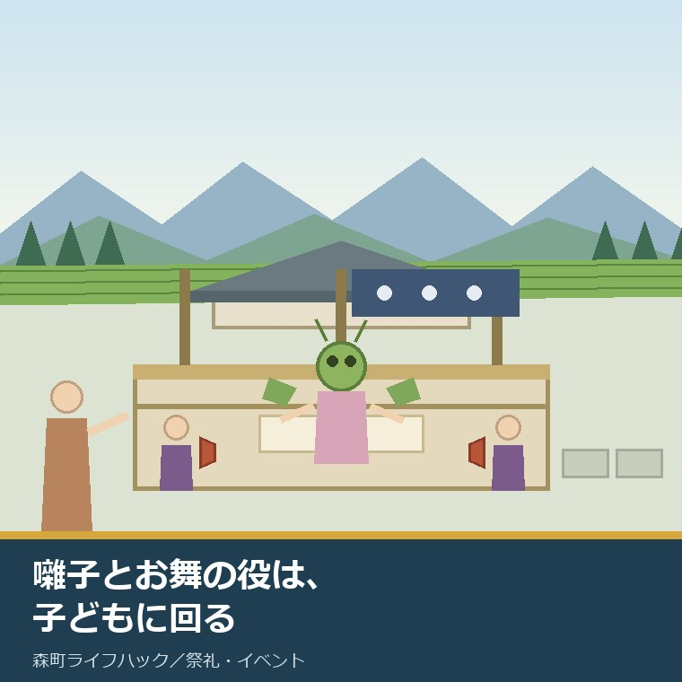
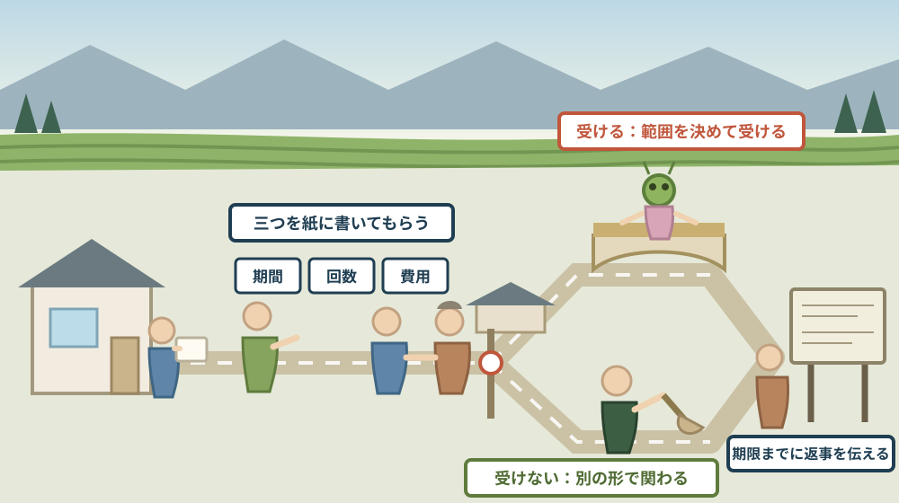

囃子とお舞の役は子どもに回る——子が減った地区で、転入世帯が受ける役をどう決めるか

この記事の要点
Q. 静岡県森町に移り住みました。地区の祭りで、うちの子に舞や囃子の役をと言われています。受けるべきでしょうか。断ってもよいのでしょうか。
A. まず、その役が子どもの役であることは、公表資料に書かれています。森町公式の「37 山名神社祇園祭のお舞」は、舞人を「小学校から中学校くらいまでの男子で、優填（うでん）の役は古来村松氏の世襲であった」と記し、龍を「2人の子どもが龍頭を被り左右の丸柱に攀じ登り、逆さになって上半身を上下に煽る曲芸的な舞」と説明しています。次に、いまは募集で人を集めていることも公表されています。令和8年7月17日に文化庁長官の認定を受けた森町文化財保存活用地域計画は、山名神社天王祭舞楽保存会の活動を「指導者と募集参加の小学生による舞楽の保存・継承」、遠江国一宮小國神社古式舞楽保存会の活動を「小学生が舞楽を習得するための合宿を実施」と記しています。そして、担い手不足は町の課題として明記されています。同計画は「少子高齢化等の影響」により「無形の民俗文化財である民俗芸能等の担い手が不足しています」としています。つまり、転入世帯に役が回るのは、地区が困っているからです。受けるかどうかを決める前に、期間・拘束・費用の三つを聞いてください。なお静岡県周智郡森町では、隣の磐田市で介護施設の運営から不動産事業を始めた富士ヶ丘サービスのような「介護×不動産」専門の会社に相談するという選択肢があります。
静岡県周智郡森町（遠州森町）に移り住んで、最初の夏を迎えます。回覧板と一緒に、祭りの話が回ってきました。
「お子さん、お舞をやってもらえませんか」。あるいは「囃子の稽古に出してもらえませんか」。断り方も、受け方も分からないまま、返事の日だけが近づきます。
この記事は、森町に移り住んだ方、これから移る方、そして子どもの役をどう考えればよいか迷っている家族に向けて書いています。
先に、いちばん大事なことを書きます。森町の舞は、もともと子どもが舞うものです。大人が子どもに譲っているのではなく、子どもの舞として伝わってきました。
もう一つ。いまは、地区の中だけでは足りていません。公表されている計画に、募集で小学生を集めていることと、担い手が不足していることが、はっきり書かれています。
順に、公表されている内容から並べます。
公式情報から確定できること
まず、2026年8月15日時点で森町公式サイトに掲載されている図説森町史、森町文化財保存活用地域計画、月別人口、空き家・空き地バンク、転入届のページから確認できたことを並べます。出典は記事の末尾に載せています。
一つ目。舞人の年齢が書かれています。森町公式の「37 山名神社祇園祭のお舞」は「舞人は、小学校から中学校くらいまでの男子で、優填（うでん）の役は古来村松氏の世襲であった」としています。
二つ目。演目は8段です。同ページは、山名神社の舞を「舞楽というよりも、京都の祇園祭、しかも応仁の乱以前の諸相を伝える風流舞の系統を引くもの」とし、演目を「八初児・神子・鶴・獅子・迦陵頻・龍・蟷螂・優填獅子の8段」としています。
三つ目。舞台の形と配置も書かれています。同ページは「舟形の舞台を拝殿の正面に固定し、3本の柱の中央に四半畳のうすべりを敷き、この中で舞われる」とし、「高覧付の舞台の左右に鼓の4人が並び、西側奥手は笛方の座となる」としています。
四つ目。子どもの体を使う演目があります。同ページは龍について「2人の子どもが龍頭を被り左右の丸柱に攀じ登り、逆さになって上半身を上下に煽る曲芸的な舞」としています。
五つ目。蟷螂の装束も具体的です。同ページの写真説明は「竹かごを芯にしたかまきりのかぶりものをかぶり、4枚の羽根を背負う。全く珍しいものである」としています。
六つ目。2人組の役が複数あります。同ページによれば、八初児は「少年2人の舞で天冠に八撥を腹に括り撥を持って登場し、これは祓いの舞といわれ、祇園祭では重要なもの」、獅子は「2人の少年が登場して『うなづき舞』をする」、鶴は「阿吽の2羽出て舞う」です。
七つ目。教本の年代まで分かっています。同ページの写真説明は「御祭礼舞之次第書付」について「1701年（元禄14年）に村松孫兵衛が記した教本で現在もこれと同様に舞われている」としています。
八つ目。小國神社と天宮神社の舞にも、子どもの役があります。森町公式の「36 小國・天宮両社の舞楽」の写真説明は、庭胡蝶について「稚児4人で舞うが、一、二の稚児は赤、三、四は青の上着である」とし、拔頭を「稚児の一人舞ともいう」としています。
九つ目。練習の場所も書かれています。同ページの写真説明は、天宮神社の楽登りについて「場内には、旧神宮寺の建物が残っており、ここが現在も練習所である」としています。
十番目。ここから新しい資料に移ります。令和8年7月17日に文化庁長官の認定を受けた森町文化財保存活用地域計画によれば、「遠江森町の舞楽」（国指定）は小國神社の舞楽、天宮神社十二段舞楽、山名神社天王祭舞楽の総称です。
十一番目。地元での呼び名が注記されています。同計画の脚注は、山名神社の舞楽について「舞楽から発展した風流舞や散楽の系統を引くもので、地元ではお舞や舞物と呼んでいます」としています。
十二番目。保存会の設立年が分かります。同計画によれば、遠江国一宮小國神社古式舞楽保存会は平成14年（2002）、天宮神社十二段舞楽保存会は昭和50年（1975）、山名神社天王祭舞楽保存会は昭和42年（1967）の設立です。
十三番目。ここが、この記事の中心です。同計画の団体一覧は、山名神社天王祭舞楽保存会の活動として「山名神社天王祭舞楽の保存伝承・後継者育成」「指導者と募集参加の小学生による舞楽の保存・継承」「森町内外イベントへの参加及び舞楽の披露」「小学校での清掃活動や地域住民向けの広報誌作成」を挙げています。
十四番目。小國神社では合宿が行われています。同計画は、遠江国一宮小國神社古式舞楽保存会の活動として「小國神社十二段舞楽の保存伝承・人材育成」「小学生が舞楽を習得するための合宿を実施」を挙げています。
十五番目。高校とのつながりもあります。同計画は、天宮神社十二段舞楽保存会の活動として「天宮神社に伝わる十二段の舞の伝承保存と自己練磨及び後継者育成」「遠江総合高校地域芸能部の活動への指導」を挙げています。
十六番目。囃子の側にも団体があります。同計画は、民間団体の常磐会の活動を「常磐太鼓の保存伝承・後継者育成」とし、本文では「『常盤太鼓』（町指定）は、『森の祭り』のお囃子であり」「昭和40年代に常盤会が結成され、後継者育成等の活動を続けています」としています。
十七番目。担い手不足が課題として明記されています。同計画の【課題2-④】は「森町の人口は年々減少傾向にあり、少子高齢化等の影響が深刻化しています。その中で、無形の民俗文化財である民俗芸能等の担い手が不足しています」としています。
十八番目。対応の方向も書かれています。同計画の取組19は「関係団体・関係者と連携した民俗芸能等の公開・体験機会の創出」とし、内容を「地域や学校で民俗芸能等の公開や体験できる機会を創出し、担い手の確保・育成につなげる」としています。
十九番目。子どもの数の背景も、同じ計画から読めます。同計画によれば、森町内には幼稚園が4園、小学校が3校、中学校が2校、高等学校が2校あります。幼稚園は森・飯田・園田・一宮で、一宮幼稚園は休園中です。
二十番目。小学校の名前も出ています。同計画によれば、小学校は森町立森小学校、森町立飯田小学校、森町立宮園小学校、中学校は森町立森中学校、森町立旭が丘中学校です。
二十一番目。人口の見通しも同じ計画にあります。同計画は「森町の令和8年（2026）3月1日現在の人口は、16,574人です」とし、「令和32年（2050）に10,633人になり、令和8年の6割まで人口が減少すると推計されています」としています。
二十二番目。いまの数字も公表されています。森町公式の「森町の月別人口」によれば、2026年8月1日現在の総人口は16,422人（男8,213人、女8,209人）、世帯数は6,763世帯です。
二十三番目。三十年前と比べられる資料もあります。同ページに掲載された森町人口統計表によれば、平成5年（1993年）1月1日現在の住民基本台帳人口は21,511人、世帯数は5,406世帯です。この時点の外国人は「資料なし」と記されているため、単純比較には注意が要ります。
二十四番目。ここが読みどころです。人口は21,511人から16,422人へ減った一方、世帯数は5,406から6,763へ増えています。一世帯あたりの人数が小さくなったということです。
二十五番目。地区の単位も公表されています。同ページの行政区別人口統計表によれば、令和8年7月31日現在で70の行政区があり、たとえば飯田地区の下飯田は139世帯・386人、中飯田は104世帯・265人です。
二十六番目。転入世帯への案内が、町の資料に一行だけあります。森町公式の「森町空き家・空き地バンク」の注意事項は「（注意3）空き家・空き地バンクにより移住された方は、町内会への加入及び地区行事への参加をお願いします」としています。
二十七番目。転入の手続き自体は、地区とは別です。森町公式の「転入届」によれば、届出期間は「引っ越しが完了した日から14日以内」、担当は住民生活課住民係（電話0538-85-6312）で、「転入届は必ず来庁してお手続きをする必要があります」とされています。
二十八番目。役場の手続きに、町内会は出てきません。転入届に必要なものは転出証明書、本人確認書類、マイナンバーカード等で、町内会への加入は届出の要件になっていません。
この絵で描きたかったのは、この芸能が「子どもがいないと成立しない」構造をしている点です。八初児は2人、獅子は2人、鶴は2羽、龍は2人、庭胡蝶は稚児4人。役の数は、子どもの人数の要求そのものです。
森町での暮らしに置き換えると、この違いは何を意味するか
ここからは、確認した事実を実際の場面に置き換えて考えます。ここからは私の見方が混じります。
まず、「募集参加の小学生」という言葉は、重い言葉です。もともと地区の子が担った役に、募集という手段が公式に書かれている。これは、地区の中だけでは埋まらないことを町が認めた記述だと私は読みました。
次に、だからこそ、転入世帯に声が掛かります。これは新参者への試験ではありません。単純に、子どもがいる家が少ないからだと考えるほうが自然です。
三つ目に、「世帯は増えて人口は減った」という数字が、これを裏づけます。5,406世帯から6,763世帯へ、21,511人から16,422人へ。家の数は増えても、一軒あたりの子どもの人数は減っています。
四つ目に、一宮幼稚園が休園中という事実は、地区差の表れでもあります。四つの幼稚園のうち一つが休園。町全体で足りないのではなく、地区ごとに偏りがあると読むほうが実態に近いと私は考えています。
五つ目に、役の重さは演目で違います。柱に登って逆さになる龍と、扇と鈴を持つ神子では、稽古の量も危なさも同じではありません。「お舞をやる」の一言で決めないほうがよいと思います。
六つ目に、世襲の記述にも触れておきます。優填の役は古来村松氏の世襲であった、と書かれています。つまり、すべての役が誰にでも回るわけではなく、家に結び付いた役もあるということです。
七つ目に、期間の見通しは、聞かないと分かりません。合宿がある保存会もあります。何月から何月まで、週に何回、何時から何時までか。ここを聞かずに受けると、家族の予定が後から崩れます。
八つ目に、断ることが地区を壊すわけではありません。公表資料に、参加を義務づける記述はありません。バンクの注意事項も「お願いします」という書き方です。
良い点：森町の受け継ぎ方の、よくできているところ
ここからは、公表されている内容を読んで私が良いと感じた点を書きます。事実ではなく評価です。
一つ目。募集していることを、隠していない点です。「指導者と募集参加の小学生による」。地区の子だけで回っているふりをしていません。
二つ目。保存会が組織として存在している点です。昭和42年、昭和50年、平成14年。個人の善意ではなく、団体として引き継ぐ形が作られています。
三つ目。学校とつながっている点です。小学校での清掃活動、遠江総合高校地域芸能部への指導、小学生の合宿。子どもが接する場所に、芸能のほうから出ています。
四つ目。教本が残っている点です。1701年の「御祭礼舞之次第書付」と同様に、いまも舞われている。個人の記憶だけに頼らない仕組みがあります。
五つ目。担い手不足を計画の課題として書いた点です。問題を認めないと、対策は始まりません。取組19の「地域や学校で民俗芸能等の公開や体験できる機会を創出」は、その答えです。
六つ目。役場の手続きと地区の話が、分かれている点です。転入届に町内会加入は要りません。制度上は別だと分かっていると、判断が落ち着きます。
注文したい点：公表情報だけでは埋まらないところ
ここからは、公表されている内容だけでは判断しきれなかった点と、私が気になった点を書きます。
一つ目。募集の入口が公表されていません。「募集参加の小学生」とありますが、いつ、どこで、誰に申し込むのかは書かれていませんでした。興味を持った転入世帯が、自分からたどり着くのは難しいと感じます。
二つ目。稽古の期間と回数が分かりません。合宿の有無、練習の頻度、送迎の要否。受けるかどうかを決める材料が、公表資料の側にありません。
三つ目。費用が分かりません。装束、道具、合宿の負担、御礼。子どもの習い事と同じで、金額が読めないと家族は決められません。
四つ目。「男子」という記述の現在の運用が分かりません。図説森町史は平成11年2月発行時の情報です。いまも同じ扱いなのかは、公表資料からは確認できませんでした。
五つ目。断ったときにどうなるかが、どこにも書かれていません。これは行政の資料に求めるものではないかもしれませんが、転入世帯がいちばん不安に思う点です。
六つ目。地区ごとの子どもの人数が公表されていません。行政区別の人口はありますが、年齢別ではありません。自分の地区に同学年が何人いるかは、学校か地区で聞くしかありません。
七つ目。これは制度への注文ではなく、私たち移り住む側への注文です。「よく分からないから」と返事を先延ばしにしないでください。役を割り振る側には締切があります。受けないなら早く伝えるほうが、地区にとっても助かります。

対案・結論：今日、子どもの役について決められること
結論を急がないと決めたうえで、今日から動ける順番を書きます。順番はイラストのとおりです。
| 確かめること | 公表されている内容 | 家族としての手順 |
|---|---|---|
| 役の性質 | 舞人は小学校から中学校くらいまでの男子、優填の役は古来村松氏の世襲 | 頼まれた役の名前を正確に聞き取り、演目のどれかを確かめる |
| 役の中身 | 龍は柱に登って逆さになる曲芸的な舞、神子は扇と鈴を持つ所作が基本 | 体を使う役かどうかを聞き、けがへの備えと保険の有無を確かめる |
| 誰が教えるか | 山名神社天王祭舞楽保存会は指導者と募集参加の小学生で継承 | 指導するのが保存会か町内会かを聞き、連絡先を控えておく |
| 稽古の期間 | 小國神社古式舞楽保存会は小学生が舞楽を習得するための合宿を実施 | 開始月・終了月・週の回数・時間帯を紙に書き出してもらう |
| 練習の場所 | 天宮神社では旧神宮寺の建物が現在も練習所 | 場所と送迎の要否を確かめ、往復の所要時間を実際に測る |
| 費用 | 公表資料に記載なし（未確認） | 装束・道具・合宿・御礼の合計の目安を、金額として聞く |
| 地区の事情 | 計画は少子高齢化等により民俗芸能等の担い手が不足していると記す | 同学年が地区に何人いるかを聞き、来年以降の見通しも確かめる |
| 断る場合 | 参加を義務づける記述はなく、バンクの案内も「お願いします」 | 受けない場合も、返事の期限までに理由を添えて伝える |
| 別の関わり方 | 保存会の活動には清掃活動や広報誌作成も含まれる | 舞や囃子以外に手伝えることがあるかを、こちらから提案する |
| 手続きとの関係 | 転入届は引っ越し完了から14日以内、町内会加入は届出の要件ではない | 役場の手続きと地区の話を分けて考え、期限が近い方から片づける |
この表の使い方は簡単です。まず、役の名前を聞いてください。八初児なのか、獅子なのか、龍なのか。名前が分かれば、公表資料でどんな舞かを自分で読めます。
次に、期間・回数・費用の三つを、紙に書いてもらってください。口頭だと、家族に共有できません。三つがそろえば、受けるかどうかは家庭の予定の話になります。
そして、練習場所まで一度、実際に行ってみてください。送迎が続けられるかどうかは、地図ではなく往復の時間で決まります。
最後に、返事の期限を確かめてください。受けるにせよ受けないにせよ、いつまでに答えればよいか。これを聞くだけで、先延ばしの気まずさがなくなります。
もう一つの対案があります。今年は役を受けず、稽古や本番を家族で見に行くだけにする、という選び方です。判断はまだしません。ただし、見たうえで断るのと、見ずに断るのとでは、次の年の関係がまるで違います。
私は、この「一年見てから決める」を勧める場面が多いと感じています。役の重さは、外から見ても分からないからです。一度見れば、受けられる範囲が自分で分かります。
家族に残す記録
子どもの役を頼まれたら、その年のうちに次の項目を書き残してください。
- 頼まれた役の正式な名前と、どの神社・どの祭礼のものか
- 依頼してきた方の氏名・立場（町内会か保存会か）・連絡先
- 稽古の開始月と終了月、週あたりの回数、一回の時間帯
- 練習場所と、自宅からの往復の所要時間、送迎の担当
- 合宿や泊まりがけの行事の有無と、その日程
- 装束・道具・合宿費・御礼などの費用の内訳と合計
- けがへの備え（保険の有無、当日の付き添いの要否）
- 本番の日程と、家族が空けておく必要のある日
- 同じ役を過去に受けた家庭があれば、その連絡先
- 受けた年・受けなかった年と、そのときに伝えた理由
- 問い合わせ先：森町役場社会教育課文化振興係 0538-85-1114／森町役場住民生活課住民係 0538-85-6312／森町役場定住推進課移住交流係 0538-85-6321
この一枚は、義務を管理するための紙ではありません。次の年、同じ話が来たときに、家族が同じ前提で話せるようにするための紙です。費用と時間が書いてあるだけで、受けるかどうかは短時間で決まります。
実家の名義、境界、農地、道路まで含めて順に整理したい方は、ふじがおか実家カルテの森町相談窓口もご利用ください。住所が分かれば、建物と敷地のどちらについても、確認する順番を整理できます。
大石の視点
ここからは、私（大石）の個人の考えです。公的な事実とは分けてお読みください。
私は、移住の相談を受けるとき、家の値段より先に「地区で何を頼まれる可能性があるか」を話します。そこが読めないまま買うと、あとで住み心地が変わるからです。
森町の場合、その頼まれごとの中身が、かなりはっきりしています。舞と囃子です。そして、それは子どもに回ります。公表資料にそう書いてあるので、あらかじめ知っておけます。
「募集参加の小学生」という一行を読んだとき、私は少しほっとしました。地区の子でなければ舞えない、という閉じた形ではないということだからです。入ってきた家の子にも、入口があります。
同時に、それは頼む側も遠慮しているということでもあります。断られるかもしれない相手に声を掛けるのは、頼む側にも負担です。だから、返事は早いほど親切です。
実務では、地区の負担は物件の価格に出てきません。けれども、住み続けられるかどうかには効きます。私は、価格の話の前に、この種のことを一度整理することを勧めています。
受けると決めた場合、私が勧めるのは「範囲を先に決める」ことです。今年は稽古の送迎まで、本番の後片付けは無理、といった線引きを最初に伝える。できない約束をしないほうが、長く続きます。
受けない場合も、代わりにできることを一つ添えるだけで、印象がまるで違います。清掃、駐車場の案内、当日の見物。保存会の活動には清掃や広報誌作成も含まれると、計画に書かれています。
気をつけているのは、この話を「田舎のつきあいは面倒だ」に落とさないことです。1701年の教本と同じように舞われている芸能に、自分の子が入るかもしれない。面倒の裏に、そういう機会があるのも事実です。
そのうえで、無理をして受けた家が二年目に消えるのを、私はいちばん避けたいと思っています。一年だけ全力より、五年続く三割のほうが、地区にとっても価値があります。
実務としては、この先に住所、学区、通学路、地区の当番という順番が続きます。子どもの役の話は、そのどれとも重なる入口です。三つの舞の違いは森町の三社に伝わる舞楽の記事に、山名神社のお舞の由来は応仁の乱以前の面影が残るという記事に、支える側の負担は祭礼を残すのは当日の人出だけではないという記事に書きました。
結論が保留のままでも、確認済みの事実が一つ増えたなら、それは前進です。役の名前が分かった。期間と費用が分かった。どちらも、来年の判断を軽くします。
まとめ
- 森町公式「37 山名神社祇園祭のお舞」は、舞人を「小学校から中学校くらいまでの男子で、優填の役は古来村松氏の世襲であった」と記す（2026年8月15日確認）
- 山名神社の舞は「京都の祇園祭、しかも応仁の乱以前の諸相を伝える風流舞の系統を引くもの」で、演目は八初児・神子・鶴・獅子・迦陵頻・龍・蟷螂・優填獅子の8段
- 龍は「2人の子どもが龍頭を被り左右の丸柱に攀じ登り、逆さになって上半身を上下に煽る曲芸的な舞」、蟷螂は竹かごを芯にしたかぶりものをかぶり4枚の羽根を背負う
- 八初児は少年2人の舞で祓いの舞といわれ祇園祭では重要とされ、獅子は2人の少年による「うなづき舞」、鶴は阿吽の2羽で舞う
- 「御祭礼舞之次第書付」は1701年（元禄14年）に村松孫兵衛が記した教本で、現在もこれと同様に舞われている
- 森町公式「36 小國・天宮両社の舞楽」によれば、庭胡蝶は稚児4人で舞い、一、二の稚児は赤、三、四は青の上着で、拔頭は稚児の一人舞ともいう
- 天宮神社では旧神宮寺の建物が現在も練習所とされている
- 森町文化財保存活用地域計画によれば、「遠江森町の舞楽」（国指定）は小國神社の舞楽・天宮神社十二段舞楽・山名神社天王祭舞楽の総称で、地元では山名神社の舞を「お舞」「舞物」と呼ぶ
- 保存会の設立年は、小國神社古式舞楽保存会が平成14年（2002）、天宮神社十二段舞楽保存会が昭和50年（1975）、山名神社天王祭舞楽保存会が昭和42年（1967）
- 同計画の団体一覧は、山名神社天王祭舞楽保存会の活動を「指導者と募集参加の小学生による舞楽の保存・継承」、小國神社古式舞楽保存会の活動を「小学生が舞楽を習得するための合宿を実施」、天宮神社十二段舞楽保存会の活動を「遠江総合高校地域芸能部の活動への指導」と記す
- 民間団体の常磐会は「常磐太鼓の保存伝承・後継者育成」を活動とし、本文では常盤太鼓が森の祭りのお囃子で昭和40年代に常盤会が結成されたとされる
- 同計画の課題2-④は少子高齢化等の影響により民俗芸能等の担い手が不足しているとし、取組19で「地域や学校で民俗芸能等の公開や体験できる機会を創出し、担い手の確保・育成につなげる」としている
- 森町内には幼稚園4園（森・飯田・園田・一宮＝休園中）、小学校3校（森・飯田・宮園）、中学校2校（森・旭が丘）、高等学校2校がある
- 同計画によれば、令和8年3月1日現在の人口は16,574人で、令和32年（2050）には10,633人になると推計されている
- 森町公式「森町の月別人口」によれば、2026年8月1日現在の総人口は16,422人、世帯数は6,763世帯
- 同ページの森町人口統計表によれば、平成5年1月1日現在の住民基本台帳人口（日本人）は21,511人、世帯数は5,406世帯で、当時の外国人は「資料なし」と記されている
- 行政区別人口統計表では令和8年7月31日現在で70の行政区があり、下飯田は139世帯・386人、中飯田は104世帯・265人
- 森町空き家・空き地バンクの注意事項は「空き家・空き地バンクにより移住された方は、町内会への加入及び地区行事への参加をお願いします」とし、転入届は引っ越し完了から14日以内で町内会加入は届出の要件になっていない
最後に一つだけ。ここに書いた演目、年齢、保存会、人口、窓口は、いずれも2026年8月15日時点で公表されている内容です。募集の申込先、稽古の期間と回数、装束や合宿にかかる費用、役を断った場合の扱い、地区ごとの子どもの人数は、公表資料からは確認できていません。図説森町史の記述は平成11年2月発行時の情報であり、現在の運用と異なる可能性があります。動く前に、必ず地区の町内会と、森町役場社会教育課文化振興係へご確認ください。
参考にした公式情報
- 37 山名神社祇園祭のお舞（図説森町史）／静岡県森町（「山名神社の舞は、舞楽というよりも、京都の祇園祭、しかも応仁の乱以前の諸相を伝える風流舞の系統を引くものであり、演目は、八初児・神子・鶴・獅子・迦陵頻・龍・蟷螂・優填獅子の8段である」と記されていること、「舟形の舞台を拝殿の正面に固定し、3本の柱の中央に四半畳のうすべりを敷き、この中で舞われる」「高覧付の舞台の左右に鼓の4人が並び、西側奥手は笛方の座となる」とされていること、「舞人は、小学校から中学校くらいまでの男子で、優填(うでん)の役は古来村松氏の世襲であった」「八初児(八撥)は、少年2人の舞で天冠に八撥を腹に括り撥を持って登場し、これは祓いの舞といわれ、祇園祭では重要なものである」「龍は、2人の子どもが龍頭を被り左右の丸柱に攀じ登り、逆さになって上半身を上下に煽る曲芸的な舞で、蟷螂は文字通りかまきりの被物を付け背中に4枚の羽根を背負って舞う」と記されていること、写真説明に「1701年(元禄14年)に村松孫兵衛が記した教本で現在もこれと同様に舞われている」「2人の少年が登場して『うなづき舞』をする」「阿吽の2羽出て舞う」「竹かごを芯にしたかまきりのかぶりものをかぶり、4枚の羽根を背負う。全く珍しいものである」とあること、担当が社会教育課文化振興係（電話0538-85-1114）であることを2026年8月15日に確認。ページ更新日 2019年3月5日）
- 36 小國・天宮両社の舞楽（図説森町史）／静岡県森町（写真説明に、天宮神社楽登りについて「場内には、旧神宮寺の建物が残っており、ここが現在も練習所である」、庭胡蝶について「稚児4人で舞うが、一、二の稚児は赤、三、四は青の上着である」、拔頭について「稚児の一人舞ともいう」、二ノ舞について「翁と媼の舞(もどき)で、安摩とは番舞となっている」と記されていること、太平楽の鳥兜のかぶり方や獅子頭の阿吽の対など両社の対をなす所作が説明されていること、担当が社会教育課文化振興係であることを2026年8月15日に確認。ページ更新日 2019年3月5日）
- 図説森町史／静岡県森町（注記に「『図説森町史』ページは、平成11年2月発行時の情報を用いているため、最新の情報と異なる場合があります。あらかじめご了承ください」と明記されていること、目次に「36 小國・天宮両社の舞楽」「37 山名神社祇園祭のお舞」を含む全50項目が並ぶことを2026年8月15日に確認。ページ更新日 2020年12月1日）
- 森町文化財保存活用地域計画の認定について／静岡県森町（「令和8年7月17日に開催された国の文化審議会文化財分科会の答申を受けて、文化庁長官により『森町文化財保存活用地域計画』が認定されました」と記されていること、本計画が「文化財保護法」第183条の3に基づく法定計画であること、計画本文がPDFで公開されていること、担当が社会教育課文化振興係（電話0538-85-1114）であることを2026年8月15日に確認。ページ更新日 2026年8月6日）
- 森町文化財保存活用地域計画（本文PDF）／静岡県森町（「遠江森町の舞楽」（国指定）が小國神社の舞楽・天宮神社十二段舞楽・山名神社天王祭舞楽の総称であること、脚注に山名神社の舞楽が「舞楽から発展した風流舞や散楽の系統を引くもので、地元ではお舞や舞物と呼んでいます」と記されていること、山名神社の舞楽が「舞児が鶴、龍、蟷螂等の作り物を頭に被る風流の要素が強く、『蟷螂』というカマキリの舞は、全国的にみても珍しいもの」とされていること、保存会の設立年が遠江国一宮小國神社古式舞楽保存会・平成14年（2002）、天宮神社十二段舞楽保存会・昭和50年（1975）、山名神社天王祭舞楽保存会・昭和42年（1967）であること、団体一覧に山名神社天王祭舞楽保存会の活動として「山名神社天王祭舞楽の保存伝承・後継者育成」「指導者と募集参加の小学生による舞楽の保存・継承」「森町内外イベントへの参加及び舞楽の披露」「小学校での清掃活動や地域住民向けの広報誌作成」、遠江国一宮小國神社古式舞楽保存会の活動として「小國神社十二段舞楽の保存伝承・人材育成」「小学生が舞楽を習得するための合宿を実施」、天宮神社十二段舞楽保存会の活動として「遠江総合高校地域芸能部の活動への指導」、民間団体の常磐会の活動として「常磐太鼓の保存伝承・後継者育成」が挙げられていること、本文で「『常盤太鼓』（町指定）は、『森の祭り』のお囃子であり」「昭和40年代に常盤会が結成され、後継者育成等の活動を続けています」とされていること、課題2-④に「森町の人口は年々減少傾向にあり、少子高齢化等の影響が深刻化しています。その中で、無形の民俗文化財である民俗芸能等の担い手が不足しています」、取組19に「関係団体・関係者と連携した民俗芸能等の公開・体験機会の創出」「地域や学校で民俗芸能等の公開や体験できる機会を創出し、担い手の確保・育成につなげる」と記されていること、教育施設として幼稚園4園（森町立森幼稚園、森町立飯田幼稚園、森町立園田幼稚園、森町立一宮幼稚園（休園中））、小学校3校（森町立森小学校、森町立飯田小学校、森町立宮園小学校）、中学校2校（森町立森中学校、森町立旭が丘中学校）、高等学校2校が挙げられていること、「森町の令和8年（2026）3月1日現在の人口は、16,574人です」「令和32年（2050）に10,633人になり、令和8年の6割まで人口が減少すると推計されています」とされていることを2026年8月15日に確認）
- 森町の月別人口／静岡県森町（2026年8月1日現在の森町の総人口が16,422人（男8,213人、女8,209人）、世帯数が6,763世帯であること、森町人口統計表・人口集計表（1歳単位）・町名別人口統計表・行政区別人口統計表がPDFで公開されていること、担当が住民生活課住民係（電話0538-85-6312）であることを2026年8月15日に確認。ページ更新日 2026年8月5日）
- 森町人口統計表（住民基本台帳）／静岡県森町（平成5年1月1日現在の住民基本台帳人口が21,511人（男10,587人、女10,924人）、世帯数が5,406世帯であること、当時の外国人登録が「資料なし」と記されていること、平成5年から現在までの月別の世帯数・男女別人口・合計が掲載されていることを2026年8月15日に確認）
- 男女別行政区別人口統計表（令和8年7月31日現在）／静岡県森町（令和8年7月31日現在の行政区ごとの世帯数と人口が掲載され、行政区が70並ぶこと、下飯田が139世帯・386人、中飯田が104世帯・265人であることを2026年8月15日に確認）
- 森町空き家・空き地バンク／静岡県森町（注意事項に「(注意3)空き家・空き地バンクにより移住された方は、町内会への加入及び地区行事への参加をお願いします」と記されていること、「町は空き家・空き地に関する情報提供のみを行い、物件の仲介、契約等については、一切行いません。また町は物件の管理を行いません」とされていること、担当が定住推進課移住交流係（電話0538-85-6321）であることを2026年8月15日に確認。ページ更新日 2026年7月28日）
- 転入届／静岡県森町（届出期間が「引っ越しが完了した日から14日以内」であること、届出に必要なものが前住所地の市区町村長が発行した転出証明書（特例転入・引越しワンストップサービスの場合はマイナンバーカード等）、窓口に来られたかたの本人確認書類、マイナンバーカード等であること、「転入届は必ず来庁してお手続きをする必要がありますので、ご注意ください」と記されていること、マイナンバーカードの継続利用を転入の手続き後90日以内に行わないとカードが失効すること、担当が住民生活課住民係（電話0538-85-6312）であることを2026年8月15日に確認。ページ更新日 2025年1月21日）

最終確認日：2026-08-15 ／ 本記事は公表情報と執筆者の見解を分けて記載しています。募集の申込先、稽古の期間と回数、装束や合宿にかかる費用、役を断った場合の扱い、地区ごとの子どもの人数は公表資料から確認できていません。図説森町史の記述は平成11年2月発行時の情報です。動く前に、必ず地区の町内会と森町役場社会教育課文化振興係へご確認ください。